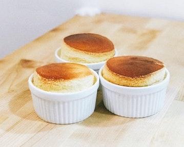

The Splendid Souffle

How to Cook a Splendid Souffle
Description:
One thing is guaranteed, as a savory or sweet dish, the soft and fluffly Splendid Souffle will put your cooking skills to the test.
Ingredients:
- 2 tbsp Caster Sugar to line souffle dishes
- 50g butter
- 1 tbsp plain flour
- 200g dark chocolate, chopped
- 2 egg yolks
- 4 egg whites
- 1/4 cup caster sugar
Steps:
- Pre-heat the oven to 180°C (350°F)
- Grease four ramekin dishes and evenly sprinkle the inside of the dish with caster sugar. Shake off any excess.
- Melt the butter in a small saucepan over a medium heat
- Add flour and stir to combine with butter until the mixture thickens
- Remove from heat, add chocolate, and egg yolks.
- Stir to fully combine the mixture and transfer to a large bowl
- Add the egg white to a separate bowl
- Beat the egg whites using an electric mixer until soft peaks form
- Slowly add caster sugar while continuing to beat the egg whites
- Beat the mixture until it is fully combined
- Add the egg ehite mixture to the chocolate mixture and fold through until combined
- Spoon the mixture into the ramekin bowls
- Cook in the oven for about 15 minutes or until the souffles are puffed up, cooked through, and brown on top
- Remove from the oven
- Sprinkle the tops with icing sugar and serve